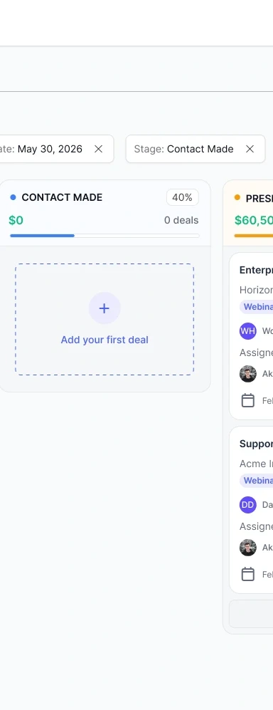

Context is scattered
Contact details, notes, activity, and opportunities answer different questions but need to be understood together.
A connected CRM experience that brings customer identity, conversations, opportunities, and follow-up into the same working context.
Make the next action visible without losing the relationship behind it.
When a salesperson opens a customer record, the question is rarely “what data do we have?” It is “what happened, where do we stand, and what should happen next?”
EasyCRM brings leads, communication history, deals, and tasks into a connected workspace. The design challenge was to make each of those views useful on its own while preserving the relationship between them.
How might we help a team move from a customer list to a confident next action without piecing the story together across screens?
Contact details, notes, activity, and opportunities answer different questions but need to be understood together.
A lead table supports comparison. A timeline supports understanding. A deal board supports tracking progress.
Finding a customer is only the start. The interface needs to make the next useful step discoverable and attributable.
These are design-framing observations based on the product workflows, not quantified user-research findings.
The design lens came from mapping the main jobs across the CRM: triage incoming leads, revisit a relationship, manage an opportunity, and make sure a follow-up has an owner.
Break down how a person moves between collections, details, activity, deals, and tasks. Identify what needs to stay visible at each transition.
Separate persistent identity, chronological context, and actionable work so that one dense screen does not give everything equal weight.
“Show me what happened last so I know what to do now.”Needs
Find a lead quickly, recognize its stage, review recent interactions, and record the next follow-up.
Design responseSearchable collections, an activity-first record, and nearby notes, deals, and tasks.
“Help me see the work that is moving—and the work that needs attention.”Needs
Understand pipeline distribution, review ownership, and recognize tasks requiring action.
Design responseA consistent deal board, repeatable card anatomy, and a dedicated task workspace.
First identify the person, then read the relationship, then choose the next step. This sequence informed the record layout.
Moving into a record should deepen context, not make users lose track of the work they were doing.
The lead record becomes the point where identity, history, and associated work meet. The broader CRM still has dedicated views for scanning and coordination.
Lists, filters, and saved segments help users locate the right records without reading every detail.
The customer page keeps identity stable while the central activity stream tells the chronological story.
Deals and tasks can be accessed in the context of a record or reviewed across customers.
Rather than forcing all CRM work into a universal layout, I used familiar patterns with specific purposes—and repeated information structures wherever consistency reduces the learning cost.
Consistent columns make lead identity, ownership, and status easier to compare; filtering and smart lists help users narrow the working set.
Stable identity on the left, chronological activity in the center, and related work to the right distinguish background from decisions.
Pipeline columns express stage visually, with repeatable cards carrying the details of each opportunity.
Due dates, status, ownership, and customer association turn a vague next step into trackable work.
The activity stream carries the changing story of the relationship. Giving it visual priority supports reading without making the static profile disappear.
Tradeoff: A richer record increases information density. Stable zones, labels, and separation of concerns keep that density purposeful.

EasyCRM's product UI relies on a deep navigation shell, restrained violet actions, light work surfaces, and components built for repetition. The warm editorial styling on this case study is deliberately separate from the product UI system below.
Reconstructed from available product screens for this portfolio study; hex values are approximate, not published official tokens.
#1E1B3A#6556F4#F8F9FB#FFFFFFClear information.
Confident action.
A product-facing sans-serif hierarchy balances scan-friendly labels, clear titles, and readable record detail. The specimen is illustrative rather than a claim about source font files.
Primary actions stay distinct from supporting actions and narrow-the-list controls.
Labels, states, and tabs provide orientation in dense information views.
Illustrative component, not a verbatim representation of customer data.
A common shell helps collections, records, and task workspaces feel related without forcing the same content layout.
Eight real product screens tell the story from lead discovery to activity, deal progression, follow-up, and reporting.
Images retain their original proportions. Select any screen to inspect it at a larger size.
Collection views put scanning and filtering first, giving users a clear point of entry into the relationship.
Saved filters bring recurring segments within reach.
Chronology makes the customer's story readable.
Opportunities grouped by stage keep the wider sales picture in view, while cards preserve local context.
Inspect opportunity context before changing status.
Turn the next step into visible, assigned work.
The design outcome is a common record model across leads, activities, opportunities, and tasks, with each workspace optimized for the decision it supports.
This case study documents design structure and visible product work. It does not claim a measured uplift in conversion, task completion, or team productivity.
Run a task-based usability study: ask participants to locate an unfamiliar lead, explain the last interaction, and assign a follow-up. Observe navigation reversals, incorrect interpretations of status, and whether the relationship context survives the move into tasks.